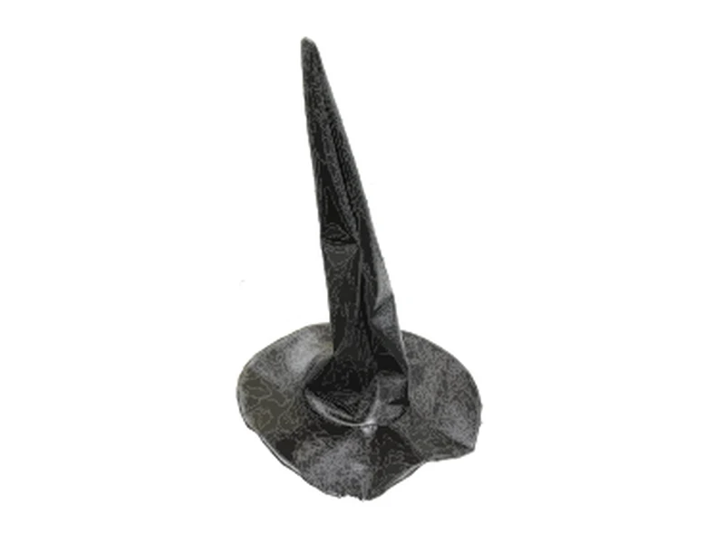
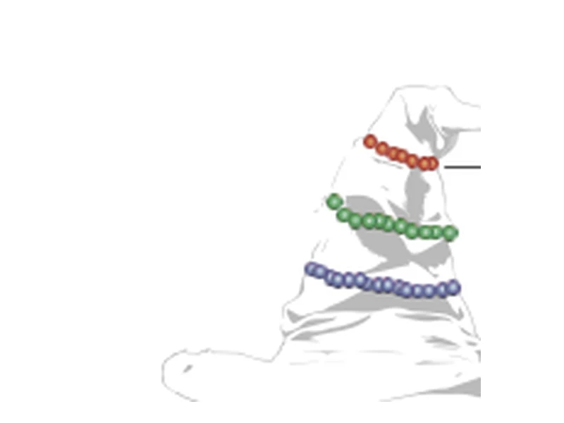
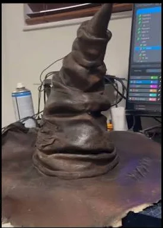
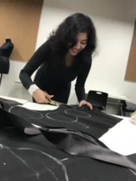
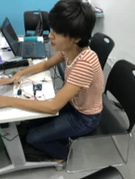

Standards I check againstWCAG 2.2 AA · NN/g heuristics · Microsoft HAX
02
Process
How I evaluate
You get
Checked against
03
The evaluation shelf
Every review is a book. The shelf keeps growing.
Spine width shows findingsDraft numbers
Hover or tap a spine to pull it out
Field notes
What the reviews teach me
In my kit
Figma
FigJam
Maze
Loom
axe DevTools
Lighthouse
Hotjar
Claude
Recommendation · LinkedInYesha is the kind of designer every founder hopes to find. If you’re building something ambitious and need a designer who will care about the outcome as much as you do, hire Yesha.Carter Jones · Co-Founder & CEO, Lucid Finance
Open a new book
Want your product on the shelf?
A two-week evaluation, with a re-test after you ship.
In one lineI turned five separate features into one financial system members can understand, inspect and control. The AI proposes; the member decides.
200+screens and states, in light and dark themes
~40%faster design-to-engineering handoff
5 → 1separate tools unified into one system
Betabeing released on TestFlight with engineering
01 · The core problem
It could see all your money. It couldn't explain any of it.
Lucid could see every account a person had. It could spot patterns, guess what was coming, and help with budgets and investing.
But each tool lived on its own. Moving from one to the next felt like walking into a different app.
And the very first thing Lucid did was ask hard money questions. People had to answer them before they saw anything helpful.
Most of these people are not money experts. Some got Lucid as a perk from work. They never went looking for it. If the first few minutes felt like homework, they would leave, and never let the AI help them.
There was a bigger worry, too. This AI could touch people's money. If it ever acted without asking, no one would trust it again.
So this wasn't a job of making screens prettier. First, Lucid needed rules: what the AI can suggest, what it must explain, and what only the person decides.
Already built
All your accountsAI tipsWhat's comingBudgetsInvesting
Five tools, and nothing tying them together.
Two ways in
Through workA perk from their employer
On their ownThey signed up themselves
The questionHow do we help people who don't want to learn finance see where they stand and act on it, while they stay in charge, not the AI?
Putting goals, data, AI and limits on one map.
Everything was already built. So which part should people see first? To answer that, I had to learn what people actually trust. Next: Research ↓
02 · Research and discovery
Deciding what deserved attention
Before choosing what to build, I needed to know what people would actually value, and which trade-offs they'd accept.
Three questions shaped the study:
What do members value most?
Which trade-offs feel acceptable?
Which onboarding asks feel risky?
QualitativeParticipatory focus group
Five internal team members working through the exercises together.
RankingMaxDiff best–worst
Forced best and worst choices that produce a clear order of preference.
Trade-offsConjoint analysis
Choices between bundles, to see which attributes carry the most weight.
Onboarding friction study
Which setup asks people accept
ScoreRisk flag
MaxDiff scores; higher means more preferred. Uploading a government ID and giving a Social Security number ranked lowest and carried risk flags.
01Clarify the decision
Which trade-off are people really making?
02Structure the choice tasks
Onboarding, configuration, explanations, personalization and access tier.
03Field and analyze
Control vs. automation carried the most weight.
04Translate into design
Automate the labor, not the judgment.
Directional, not final. The panel was five internal team members, so these findings guided the design and still need validating with real members.
The result: a clear line between features that sound useful and experiences people find meaningfully valuable.
03 · Key insights
Guidance, not autopilot
The real trade-off wasn't between features. It sat between control and automation.
Insight 01
Guidance without losing agency
Help with financial decisions was valued, but not at the cost of understanding or control.
Insight 02
Sounding useful isn't being valuable
Ranking separated features that sounded useful from experiences people saw as meaningfully valuable.
Insight 03
Sensitive asks feel risky
Government ID and Social Security number requests ranked lowest and carried risk flags.
Insight 04
Automate the labor, not the judgment
Automation was welcome when control stayed visible and every change was confirmed first.
That made budgeting the intervention point: where data, guidance and member-controlled action meet.
Help deciding,not a system that decides for them.
04 · Design strategy
From feature list to one product
Three principles turned the research into rules every screen had to follow.
P1
Navigation mirrors the member's financial mental model.
Not the company's internal feature structure.
P2
The system computes; the member judges.
AI handles the math and the setup. Approval stays human.
P3
AI proposes, never quietly executes.
Every action that changes money passes a confirmation gate.
Product architecture: onboarding, Home, Spend, Invest, Future, AI, subscriptions and settings as one end-to-end flow.
Shared map
One map for design and engineering
Both teams worked from the same navigation architecture and wireframes, starting with Home and Spend.
05 · Design decisions
Four decisions that carried the strategy
Each decision follows the same pattern: the problem, what I changed, the evidence behind it, and what it cost.
Decision 1 of 4 · Progressive onboarding
Reduce setup before commitment
Problem
Onboarding asked for detailed financial decisions before members saw any value.
What I changed
Ask only what a baseline needs. Deeper questions surface inside Spend, Invest, Debt or Future when they become relevant.
Evidence
In the MaxDiff ranking, ID and SSN asks scored lowest and carried risk flags.
Trade-off
A thinner early profile. Personalization deepens over time.
Faster time-to-value and lower up-front cognitive load.
Decision 2 of 4 · Guided budgeting
Budgeting from reality
Problem
A blank budget forced members to estimate categories and recall their spending all at once.
What I changed
Lucid suggests a starting plan from income, recurring expenses and category history. Members review, adjust and confirm.
Evidence
The core research theme: help deciding, without losing understanding or agency.
Trade-off
Suggestions are only as strong as the member's connected-data coverage.
1Choose
2Analyze
3Review
4Adjust
5Confirm
Financial history
Suggested plan
Review
Adjust
Create budget
AI handles computation and setup; the member keeps judgment and approval.
Let the system do the computational work while the member keeps judgment.
Decision 3 of 4 · AI editing and confirmation
Turn language into action
Problem
Small edits meant digging through category controls, but shortcuts can hide what AI does with money.
What I changed
Members ask in plain language. Lucid shows the current state, the proposed state and the impact before anything changes.
Evidence
Control vs. automation carried the most weight in the trade-off research.
Trade-off
One extra step on every money change, in exchange for changes members can inspect and reverse.
Try it · AI edit with confirmation
Cut my dining budget by $100.
Proposed change
Dining$500→$400
+$100 available toward savings or another goal.
Intent · Context · Calculation · Proposed change
Applied. Dining is now $400, and $100 is available for savings or another goal.
No changes made. Your dining budget is still $500.
Interaction model
1AI proposes
2AI explains
3Member reviews
4Member confirms
5System executes
Nothing that moves money happens before step 4.
Lucid AI agent architecture, end to end: every money-changing action stops at a confirmation step.
The AI could recommend the change. It couldn't quietly make it.
Decision 4 of 4 · Design system
Scaling the decisions
Problem
Past 200 screens and states, keeping consistency by hand became a product risk.
What I changed
One shared light and dark system covering navigation, financial cards, forms, AI states, feedback, and empty and error states.
Paired with
A sandbox built for go-to-market work and quick implementation sprints.
Result
Design-to-engineering handoff time dropped by about 40%.
Tokens
Primitives
Components
Patterns
Product screens
200+ screens and states, one shared language in light and dark.
A design system isn't a style guide. It's a shared language between designers and engineers.
06 · Outcomes and ecosystem
From feature set to one financial system
Lucid now behaves like one financial system, not several dashboards with disconnected data.
It's being released on TestFlight with engineering. Design and engineering share one navigation architecture across more than 200 screens and states.
One changeDining −$100
Spending progress
Available cash
Savings goals
Future projections
AI recommendations
Weekly financial feedback
Shared product state: one edit updates every place that depends on it.
The complete design catalogue: organized layers and artboards in light and dark themes.
Still in beta. Post-release product results will be added once members are using Lucid.
07 · Reflection
Trust comes from behavior, not autonomy
Trust in financial AI comes from behavior members can understand, inspect and control, not from AI that appears autonomous.
The opportunity wasn't adding a chatbot to finance. It was designing how data, AI judgment and human agency work together.
Understandable
Members can see what Lucid knows and why it suggests something.
Inspectable
Every proposed change shows the current state, the new state and the impact.
Controllable
Members review, adjust and approve. Judgment stays human.
Confirm first
Nothing that moves money happens without a yes.
If I continued
Validate onboarding, guided budgeting and AI editing with real members after release.
Extend the research beyond the internal team to both B2B2E and B2C members.
My focus going forward is on AI-enabled systems that keep human judgment central, especially when the consequences are financial.
Recommendation · LinkedInShe designed our entire mobile app UI, 200+ screens across light and dark mode. What stood out most was how fast she worked without sacrificing quality.Cash Hancock · Co-Founder, Lucid Finance
Yesha
Overview
[Client logo · pending approval]
Case study · Health · Design systems · AI
Stability without a redesign
How I drift-proofed a live health app's UI with tokens, AI audits and automated guardrails.
Client
Next Health, consumer health optimization
My role
Design lead
Product
Native iOS health app
Users
Members tracking labs, wearables and records
[HERO MOCKUP]Twin dashboard on iPhone. Pending client approval.
In one lineI was brought back to fix UI inconsistencies, but the real problem was drift: every fix landed on one screen and nowhere else. I moved the fixes into the system, so each one lands once and reaches every screen.
0raw values in Figma or code on migrated screens
57/57visual tests passing in Dark and Light
38code components: 35 from Figma, 3 code-only
18onboarding conflicts resolved into one flow
01 · The core problem
Every fix stayed where I made it.
The app was already out in the world. People used it to read their blood test results and track their health.
The founder asked me back to tidy it up. Make things match. Make sorting easier. Make the text bigger. Smooth the path to paying. One rule came with it: don't redesign it.
So I started fixing. Then I noticed something strange. When I fixed a card on one screen, the same broken card was still waiting on the others.
Each screen had been built from its own copies. A fix to one copy never reached the rest. I could fix this app forever and never finish.
In most apps, that's a small mess. But this app shows people their health. When the screens look careless, people start to doubt the numbers.
The founder's asks
Make things match
Easier sorting on the Data tab
Bigger, easier-to-read text
A smooth path from sign-up to paying
Rule: no redesign
Where it was breaking
LOCAL — CardLOCAL — ListRowLOCAL — Avatar
Each screen had its own copy of these parts, so a fix stayed on one screen. Buttons were missing their pressed, disabled and focused looks, and the iPhone design was being rebuilt in React Native.
[SCREEN]Before: Profile built from its own copies
The questionHow do we make the app match everywhere without redesigning it, so one fix reaches every screen?
Before I fixed anything else, I needed to know how big the mess really was. So I counted. Next: Research ↓
02 · Research and discovery
Measuring system health first
Before changing a single screen, I measured how far the system had drifted.
Three questions shaped the audit:
Which values aren't bound to tokens?
What exists only in Figma, or only in code?
Where do states and contrast break, in Dark and in Light?
Live appAccessibility and usability audit
Contrast from exact token values, and 44 pt minimum tap targets.
Figma fileAI-assisted audit (MCP)
Every binding, style and layer read and checked against the system.
MarketSign-up teardown
How comparable health apps take new members from sign-up to value.
Baseline audit of the Figma file
Drift, counted
133unbound spacing values
29detached text layers
152unnamed layers
Each dot is one issue found in the baseline audit.
Competitor sign-up teardown
100Function HealthSuperpower
[ARTIFACT]Competitor flow maps
[ARTIFACT]Live-app accessibility and usability audit findings
The outcome: a measured baseline, and a list of drift sources to close at the system level.
03 · Key insights
What the audits revealed about drift
Insight 01
Drift is a product problem
An invisible pressed state or a hard-to-read status pill makes people doubt their own health data.
Insight 02
Near-misses are future failures
Two Light-mode pairs passed contrast by less than 0.1.
Insight 03
One token can hide several bugs
In Light, surface-raised equalled surface, so pressed states, the gauge track and sheet groups vanished.
Insight 04
AI findings need verification
One audit flag turned out to be a false positive.
Light mode
Contrast findings
Element
Ratio
Needs
Result
Tertiary text on app
4.56:1
4.5:1
Near miss
Input border
3.05:1
3:1
Near miss
Sign out text
4.39:1
4.5:1
Fails
Attention pill text
4.37:1
4.5:1
Fails
AI response overline
4.35:1
4.5:1
Fails
Selected-card footnotes
3.93:1
4.5:1
Fails
Dark mode: no axe violations on migrated screens.
Self-correction
Reporting our own false positive
An early "double alpha" fill finding was withdrawn. Figma renders a bound alpha once, and the Sign out fill sampled at exactly the token value.
Members feel inconsistency as doubt.Fix the root, not the instance. Verify before acting.
04 · Design strategy
Fix the system, not the screens
With a redesign off the table, the design system became the way to improve the product.
P1
One source of truth.
Tokens run from primitives to semantic names, and components never touch primitives.
P2
One shared name.
An --hn- naming contract links Figma variables to code.
P3
A component map.
One record of what's built, code-only, missing in Figma or excluded, checked before anything new is added.
P4
Accessibility in the tokens.
Contrast, 44 pt targets and text sizes are inherited by every screen.
The AI-assisted maintenance loop
Audit
Map
Fix
Verify
Feed back
↺ Then the loop runs again
AI handles scale
Reads every binding and style
Generates the registry and map
Runs contrast math and code checks
I own judgment
Library component or one-off?
Which gaps block a release
Rules that never bend, like critical health alerts
One decision, used everywhere
A token fix reaches every screen
#4F46E5
accent/primary
Primary button
Every screen
One token change fixed contrast on every primary button at once.
Try it · the same fix, two ways of building
When you can't redesign,the design system is how you improve the product.
05 · Design decisions
Three decisions that made stability stick
Each decision follows the same pattern: the problem, what I changed, how I validated it, and what it cost.
Decision 1 of 3 · System foundations
Fix the root, not the instance
Problem
Screens like Profile were built from local frames, so each fix stayed on one screen.
What I changed
Migrated screens to library components bound to tokens, and fixed issues at the root. One Card padding fix (token plus stroke width) also corrected Profile's gauge.
Validated
On Profile: 0 raw values in Figma and code, and 7 of 7 visual tests within 1% variance in Dark and Light.
Trade-off
More work per component (story, map entry, tests), in exchange for fixes that propagate.
Unmapped flag report
From gaps to asks
#
Layer
Ask for the library
U2
LOCAL — Card
Card: Outlined / Filled
U3
LOCAL — ListRow
List Row with states
U4
LOCAL — Avatar
Add Avatar
U6
NavHeader padding
Ship a density/gutter token
U9
Score Gauge arc
Drive the arc from data
[SCREEN] BeforeProfile: local frames, overrides[SCREEN] AfterProfile: library components, tokens
Every layer the system can't cover becomes a named ask for the library, never a silent override.
Decision 2 of 3 · Onboarding consistency
Three concepts, one consistent flow
Problem
Three onboarding concepts (Interactive Story, Guided Setup and Hybrid) conflicted in 18 places.
What I changed
Resolved each conflict into one flow built from migrated screens and system components. Passwordless sign-in removes password reset, and code and paid paths meet on one "You're a member" screen.
Trade-off
Optional setup moves after booking: a thinner Twin at first, but no member is blocked from activation.
1Welcome story
2Passwordless account
3Basics
4Consent
5Membership
6 · ActivationBook first blood test
7Optional setup
8Twin dashboard
[SCREEN]Account entry[SCREEN]You're a member[SCREEN]Book your test
Activation is one step: booking the first blood test. Everything else can wait.
Decision 3 of 3 · Automated guardrails
Stability that enforces itself
Problem
Consistency fixes decay once the designer moves on.
What I changed
Every screen passes the same gates: a token lint that fails on any raw value, Dark and Light visual regression, keyboard and hit-area guards, and axe checks.
Validated
57 of 57 visual tests passing across migrated screens, in both themes, within 1% pixel difference.
Trade-off
Intentional design changes require refreshing baselines: a deliberate step instead of silent drift.
The QA gate every screen passes
Token lint fails on any raw value
Visual regression in Dark and Light, full page and first viewport
Structure, keyboard and hit-area guards: every control at least 44 × 44
axe accessibility checks
Per-environment baselines: QA has no SF Pro, so metrics shift 2 px
Every mismatch gets a class and an owner
Class
Resolution
Token / Component
Fix at the root in code
Layout (Figma)
Flag to design with the fix
Content (Figma)
Code follows the data
Expected variance
Font fallback, OS-drawn bars
The system catches drift before members do.
06 · Outcomes and what it enables
From patchwork to a product foundation
HealthNexus now has a foundation that new screens build on, not around.
Audit issues down to 0: unbound spacing, detached text and unnamed layers.
12 screen states rebuilt across Twin, Data, Vault, Chat and Profile.
Consistency is a feature members feel, most of all with health data.
AI makes audits cheap enough to run continuously; judgment stays human.
Every exception becomes a backlog item, never a silent override.
Fix once.
Every fix lands in the system and reaches every screen.
Verify always.
AI runs the audits; findings get checked before anyone acts on them.
Never a silent override.
What the system can't cover becomes a named ask for the library.
If I continued
Separate the Light surface tokens and fix the failing contrast pairs.
Publish List Row, Card variants, the density gutter, Toast and Scrim.
Design the web-checkout hand-off and VoiceOver support.
Track lint violations and UI bug reports per release.
My focus going forward is AI-assisted systems that keep human judgment central, so people can trust what a health app tells them.
Yesha
Overview
[Client logo · pending approval]
Case study · Education · Data to action
Designing data-to-action learning systems at scale
I joined to improve UI consistency. The real problem wasn't visual: learning data wasn't turning into teaching or operational action.
Client
Benesse Corporation, India expansion
Timeline
Oct 2023 – Apr 2025
Product
Multi-role learning platform for university-entrance exam prep (CUET)
Users
Students, teachers, mentors and ops teams
[HERO MOCKUP]Performance insights dashboard on a laptop. Pending client approval.
In one lineAssessment data existed, but teachers, students and ops teams couldn't act on it. I turned a reporting platform into a decision-support system, built around each role's next step.
+25%teacher activation
~70%fewer ops tickets and calls during exam cycles
4roles served by one platform
3follow-on products built on it
01 · The core problem
The answers were there. Nobody could use them.
I was hired to make the screens look consistent. But the screens were not the real problem.
This app helped students get ready for one big exam. That exam decides which university they get into.
Every practice test made data. The data could show who was struggling, and where. But it never reached the people who could help.
Teachers could see students falling behind. They couldn't see why, or what to teach next. Students got lost just signing in. And at exam time, the support team was buried in calls and tickets.
The exam date doesn't move. Every week a student studied the wrong thing was a week they couldn't get back.
Prettier screens wouldn't fix that. The app had to stop showing numbers and start telling each person what to do next.
What the design had to work with
Big classes
Schools new to apps
One exam that decides university
Work behind the scenes
Checked how people sign in and find their role
Mapped the school year: the tests, and when help happens
Sign-in and consent that follow new student-data rules
Agreed what to build with the global product and engineering team
The questionHow do we turn test results into a clear next step for each person, in big classes, in schools new to apps, before an exam that can't wait?
[ARTIFACT]Review of sign-in and roles[ARTIFACT]School-year map of tests and help[ARTIFACT]Consent flows for student-data rules
But "each person" meant four very different jobs: students, teachers, mentors and support teams. So first, I had to find where each one got stuck. Next: Research ↓
02 · Research and discovery
Understanding where workflows broke down
I looked for the moments where data should have led to a next step, and didn't.
Where does data fail to translate into clear next steps?
Which tasks require manual workarounds or outside tools?
Where do access and role mismatches interrupt the work?
PeopleUser interviews
Focused on how daily tasks actually get done, and on the exceptions.
ProductUsability audits
Sign-in, role identification and navigation, end to end.
SignalsAnalytics and support patterns
Where adoption stalled and which problems kept coming back to support.
Research foundations
Patterns from my earlier ERP research shaped this work: users expect systems to mirror how work happens, not how data is stored.
The outcome: systemic breakdowns in identity, operational processes and mental-model alignment.
03 · Key insights
Each role measures progress differently
Insight 01
Mental models drive interaction, not features
Users expect systems to mirror how work happens, not how data is stored.
Insight 02
Teachers think in learning gaps, not dashboards
A chart of scores didn't tell a teacher what to teach tomorrow.
Insight 03
Each role has its own model of progress
Students, teachers, mentors and ops each needed a different answer from the same data.
Insight 04
Access failures break trust faster than poor UI
If someone can't sign in on exam day, nothing else on the screen matters.
These findings moved the worktoward role-based dashboards and action-driven workflows.
04 · Design strategy
From reporting platform to decision-support system
P1
Discoverability through dashboards.
Dashboards became the primary navigation layer, so each role reaches its tasks, insights and actions without digging through menus.
P2
Error prevention by default.
Fallbacks on sign-in, profile management and password recovery, with clear messages that stay consistent across products.
P3
A system built for education.
An extended Ant Design system with dashboard cards, performance visualizations, remediation and action modules, and education-specific forms.
The loop every workflow follows
Assess: find the issue
Analyze: plan the action
Act: advise the student
↺ Then the next assessment cycle starts
[ARTIFACT]Role-based wireframes and feature prioritization map05 · Design decisions
Three decisions that turned data into action
Each decision follows the same pattern: the problem, what I changed, how I validated it, and what it cost.
Decision 1 of 3 · Role-based dashboards
Designing around mental models, not menus
Problem
Deep navigation overwhelmed every kind of user.
What I changed
Dashboards became the primary interaction layer, surfacing tasks, insights and actions for each role.
Validated
Role-based task scenarios testing first impressions of the platform, run with developers.
Trade-off
More backend complexity, in exchange for a simpler front end.
Try it · one platform, three roles
Same data, three views. Illustrative content.
Each role sees only what supports its decisions, not everything the system can do.
Decision 2 of 3 · Pedagogical signals
From test results to teaching actions
Problem
Teachers noticed problems but lacked guidance on causes, and on how to help low-performing students.
What I changed
Converted performance data into learning-gap categories with embedded actions, so a gap arrives with a way to close it.
Validated
Tested with teachers on real planning tasks, confirming they could set up interventions from the recommendations.
Trade-off
Less customization, but faster and more consistent follow-through at scale.
Test results
Learning-gap categories
Recommended activities
Teaching plan
Traditional reports supported analysis, not lesson planning. The guided flow ends in a plan.
[SCREEN]Teacher action-planning flow on tablet and phone
Why it mattered
More backend orchestration was required, but teachers no longer jumped between tools.
The goal wasn't better analytics. It was faster, more confident teaching decisions.
Decision 3 of 3 · System and identity foundations
Scaling through design systems and workflow reliability
Problem
Access failures broke trust faster than poor UI, and ops teams carried the load during exam cycles.
What I changed
A design system built on Ant Design and extended for education, plus sign-in recovery, profile-to-school mapping and error-prevention flows.
Validated
Monitored sign-in failures and support tickets after rollout to confirm stability improved.
Prioritized
Scale, consistency and reliability over new features.
[SCREEN] BeforeStudent home before the redesign[SCREEN] AfterStudent home on the extended design system
Operational trust drives platform growth.
06 · Outcomes and ecosystem
From platform to product ecosystem
Navigator became the backbone for several learning products, not a single app.
+25% teacher activation, a sign of stronger integration into daily teaching.
~70% fewer ops tickets and calls, which made peak exam cycles scalable.
Teachers reported less reliance on ops teams and faster turnaround on intervention plans.
~30% less lesson-planning time with Sensei, an AI assistant I designed for teachers.
The platformNavigator
Adaptive student practice
Teacher workflow assistant
Responsive platform redesign
Follow-on products built on Navigator. Product names pending review.
[SCREENS]Product montage across mobile, tablet and desktop07 · Reflection
Data matters when it changes what happens next
Learning platforms have to move past analytics, into planning and follow-through.
Real impact came from connecting data to clear instructional next steps inside everyday workflows.
Assess.
Data shows where each learner stands.
Analyze.
Each role sees what that means for its own work.
Act.
The next step is built into the workflow, not left in a report.
If I continued
Add longitudinal tracking to measure whether interventions work over time.
Extend research into cross-team handoffs and exception cases.
My focus going forward is on AI-enabled systems that help people act with confidence and clarity, especially in high-stakes, real-world environments.
Recommendation · LinkedInYesha doesn’t just design screens, she uncovers user needs and turns them into sharp, actionable product ideas.Chaitanya Naik · Product Leader, Benesse
Yesha
Overview
[Client logo · pending approval]
Case study · Education · Operations · AI
Redesigning ERP workflows for operational efficiency
A school-management platform was pushing admin work onto people. Across three projects, I moved that work into the system and left people the decisions.
Client
LEAD School, K-12 school network, India
My role
User Experience Designer: research, interaction and visual design
Product
Nucleus, a school-management ERP for web and mobile
Users
Principals, coordinators, area managers and ops teams
[HERO MOCKUP]Onboarding checklist and homepage. Pending client approval.
In one linePrincipals delegated setup, support was flooded with grouping questions, and visit reports took hours. I redesigned three workflows so the system does the routine work and people confirm the decisions.
~70%fewer ops tickets on literacy-level grouping
10 minto finish a visit report, down from 3–4 hours
3,500schools on the platform
40+user interviews behind the redesign
01 · The core problem
The app was meant to do the work. People did it instead.
Every school year, schools set up their app again. Classes, students, teachers, reading levels, the calendar.
It was so slow and confusing that principals gave up. They handed the job to their area managers instead.
One step had to be perfect: sorting students into reading levels. It caused more calls for help than anything else.
Then came school visits. After each one, an area manager spent 3 to 4 hours writing a report by hand.
The work didn't vanish when the app failed to do it. It landed on people who were already stretched thin. Burnout was high, and people kept leaving. Every hour spent on paperwork was an hour not spent helping a school teach.
“School onboarding is very time-consuming and tedious for principals. The platform isn't usable for them.”
User interview
“Principals give all the tasks to area managers to finish onboarding, because they aren't motivated to use the platform.”
User interview
“The platform lacks triggers to guide us through onboarding. There's a high cognitive load to perform tasks.”
User interview
The questionHow do we let the app do the routine work, so principals can finish setup, sorting and reports themselves, with fewer mistakes and no one holding their hand?
Principals could do every one of these steps. So why did they keep handing them off? I talked with 40+ school users and 20+ area managers to find out. Next: Research ↓
02 · Research and discovery
Listening at the scale of 3,500 schools
I started with the people doing the work, then traced where the product made it harder.
Interviews40+ school users
Principals and coordinators, on setup, daily admin and reports.
Focus group20+ area managers
The people schools called when grouping went wrong.
EvaluationHeuristic review
Of the existing grouping flow, screen by screen.
Who goes through onboarding
72%18%10%
Existing schools 72%
Migrating to the full solution 18%
New schools 10%
Onboarding is continuous: every school year, existing schools set up again. Designing only for new schools would miss most users.
Heuristic · Not met
Match with the real world
Information didn't appear in a natural, logical order.
Heuristic · Not met
Error prevention
With no clear information architecture, users repeated the same tasks, causing errors at several levels.
[ARTIFACT]User journey map across onboarding, admin, reports and analysis[ARTIFACT]Interview synthesis
The outcome: a 58-page research report presented to the whole product team, with P0, P1 and P2 priorities for the roadmap.
03 · Key insights
The blocker was motivation, not ability
Insight 01
Setup is front-loaded
Most tasks need setup during onboarding. After that, principals mainly view progress and update information.
Insight 02
Delegation was a signal
Principals passed setup to area managers because the platform gave them no reason to stay.
Insight 03
No triggers, high load
Without prompts, every step was a decision people had to remember on their own.
Insight 04
Errors create support load
When grouping was unclear, schools called area managers and support instead of finishing it themselves.
04 · Design strategy
Make the next step easy, then prompt it
BJ Fogg's behavior model framed the fix: behavior happens when motivation, ability and a prompt meet. A prompt only works when the interface makes the step easy enough.
GreetClear guidance on the overall process and the product, with detail on everything the platform provides.
InformClear expectations for each task, visible progress, and someone to guide them when needed.
EngageA sense of progression, instead of every resource arriving at once.
P1
Must-haves first.
Identify the functions a school can't start the year without, and split them into setup and post-setup.
P2
Automate the routine.
Let the system do repetitive allocation and report-building, and keep people on the decisions.
P3
Mobile where the work happens.
Area managers work on school visits, so reports had to work on a phone first.
05 · Design decisions
Three workflows, one principle: the system does the routine
Each decision follows the same pattern: the problem, what I changed, the evidence behind it, and what I'd do differently.
Decision 1 of 3 · Onboarding
A checklist that prompts, not a manual that waits
Problem
Setup was front-loaded and confusing, so principals delegated it.
What I changed
An onboarding checklist with stages, resume-where-you-left-off, prompts toward regular admin once setup is done, a clutter-free homepage, and a menu for everything else.
Evidence
40+ interviews, plus Fogg's model: an intuitive interface and timely prompts.
Next time
Show which modules are already visited, and personalize the view by the type of school.
Set up your school3 of 9 done
Confirm classes, subjects and student countDone
Add student detailsDone
Allocate literacy-level classesDone
Add teacher detailsNext
Promote students to the new yearTo do
Allocate subject teachersTo do
Allocate class teachersTo do
Set up the academic calendarTo do
Get teacher tablets readyTo do
[SCREEN]Onboarding checklist over the clutter-free homepage
The checklist turns a manual into a series of prompts with visible progress.
Decision 2 of 3 · AI-suggested grouping
The system suggests, the principal confirms
Problem
Literacy-level grouping had to be error-free, but users didn't understand the flow and relied on area managers and support.
What I changed
An AI guide reads school data and recommends a level for each group. Principals review, then allocate or change it. Marks can be entered in the app or uploaded as a spreadsheet.
Evidence
A 20+ person focus group with area managers, and a heuristic review of the old flow.
Next time
Define scope earlier. Unclear scope cost many iterations.
Try it · AI-suggested grouping
Class 161 students · 3 divisionsPending
What the AI guide does
1Reads the school's data
2Detects dependencies across flows
3Suggests a level per group
4Principal confirms or changes
The suggestion saves the work. The principal still owns the call.
~70% fewer ops tickets on literacy-level grouping, across 3,500 schools.
Decision 3 of 3 · Visit reports
From 3–4 hours to 10 minutes
Problem
On every school visit, area managers wrote observation and coaching reports by hand in Google Docs and PDFs.
What I changed
A mobile-first report builder: tap ratings and feedback categories instead of typing, auto-selection, draft states, and a responsive web view for principals.
Evidence
A high-fidelity proof of concept, built in 48 hours, won stakeholder buy-in to start the project.
Delivered
50+ screens across mobile, tablet and desktop, with new marketing design guidelines.
Time to finish one report
Docs and PDFs3–4 hours
Report builder10 min
Striped segment shows the range. About 96% less time per report.
Tap, don't typeEngagement · rating of teacher
1 Basic2 Proficient3 Mastery
Feedback category
Use attention grabbersUse transitionsAsk open-ended questionsGive hints for questions
Recognition beats recall: choosing is faster than writing.
06 · Outcomes
Less hand-holding, more time for schools
Schools could finish setup, grouping and reporting themselves, and the teams supporting them got their time back.
~70% fewer ops tickets on literacy-level grouping across 3,500 schools.
Visit reports in 10 minutes, down from 3–4 hours.
35% faster average task completion across the redesigned workflows.
22% better educator retention, the highest impact recorded at LEAD School.
50% fewer design-related engineering queries, from structured feedback loops.
A 58-page research report that set P0, P1 and P2 priorities for the roadmap.
[SCREENS]Final designs: onboarding, AI-suggested grouping and the report builder
What came next
These patterns, especially designing for how work actually happens, shaped my next platform.
07 · Reflection
Good admin design removes work people never wanted
Greet.
Show the whole path before asking for the first step.
Inform.
Make progress visible, so nobody has to remember where they left off.
Engage.
Prompt the next useful task, one at a time.
If I continued
Make the homepage more interactive, with insights that bring principals back.
Cut area-manager dependency further with interactive walkthroughs and short videos.
Keep a history of grouping decisions, and let schools order books straight from the grouping page.
From sketch to something you can wear


ConceptMade
Concept
Three mood strips: red for do not disturb, green for happy, blue for calm. Each plays matching music inside the hat.
Made
Cut, stitched and wired by hand, with lights and headphones built into the hat.
Inside the hat
Fashion on the outside. Support on the inside.
Fabric shellPattern-cut and hand-stitched. It has to look good, or no one will wear it.
Mood lightsRed, green and blue strips show how you feel without saying it.
ControlsSimple switches the wearer owns. No app, no setup.
SoundHeadphones inside play music matched to each mood.
For fun
Same hat. Different job.
The internetA Sorting Hat that moves and talks, built with animatronics.

Credit: @yodacucu via Explainlikeimfivee
Me, 2018A hat that shows how you feel. Arduino lights and sound for your mood.


Sketch → cut → wire → wear
Theirs performs for an audience. Mine supports the person wearing it.